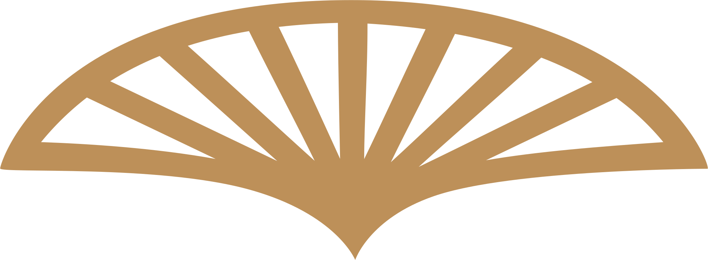
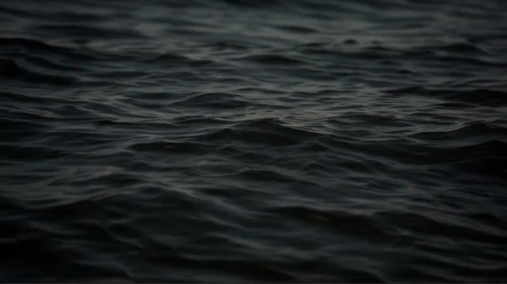
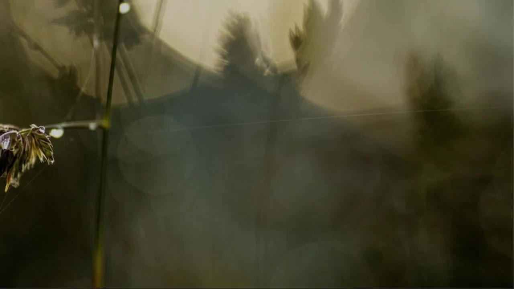
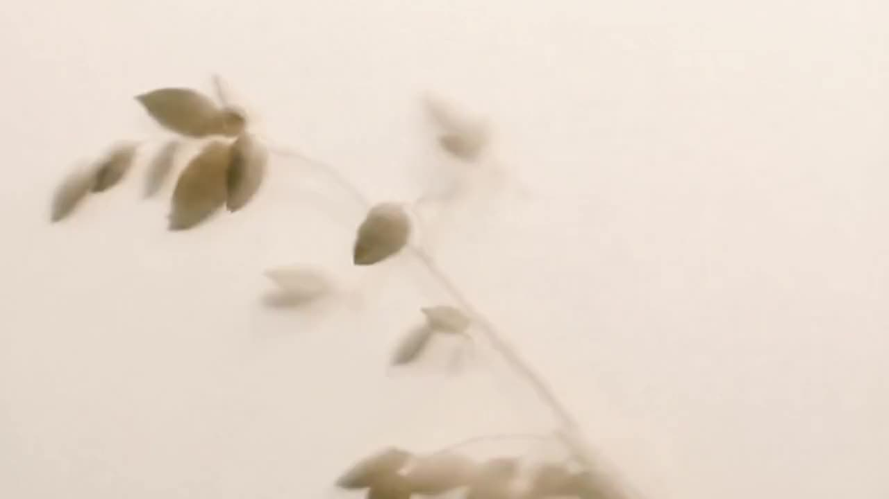
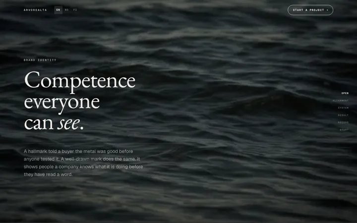
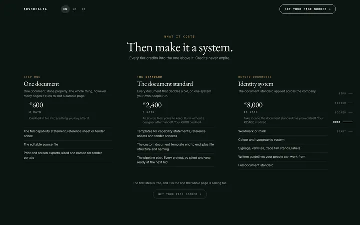
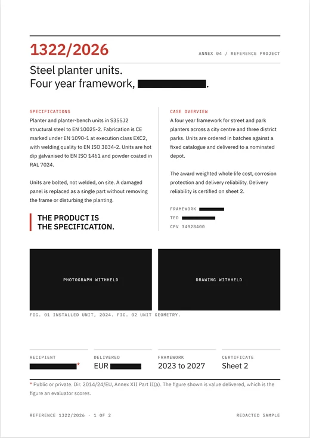

Brand book
Arvorealta designs the documents and marks a company is judged by. This book says how the brand is used, so that anyone making something in its name gets it right the first time.
- Edition
- 1.0
- Date
- 15 November 2026
- Owner
- Atlas Sahrim
- Approves changes
- Atlas Sahrim
- Covers
- Web, documents, video
The brand on one page
If you read nothing else, read this.
A studio for the documents and marks that decide how a company is judged: tender documents, identity systems and video.
Written once, right every time. Everything we make holds up when somebody scores it.
Written once. Right every time.
Used at 70, 20 and 10 per cent.
EB Garamond, Geist, Geist Mono.
Proof before explanation; the impression carries it.
- Never alter the mark. No new colour, no effect, no stretching.
- Never claim what cannot be checked. A count, never an invented score.
- Never sign a client's document. What goes out under their name carries no mark of ours.
The message
One line the brand exists to make true. It is stated, never explained.
Written once.
Right every time.
- Use the line as written. No adjective added, no word swapped.
- One line per surface. A page, a deck cover or a signature carries one message, never both.
- Say it, then show it. The work underneath is the explanation.
The mark
The gold fan is the signature. It appears once per surface, at size, and it is never redrawn.
- The point. Every pleat starts from one point at the foot. That single origin is what makes the fan one object, not a spray of rays.
- The pleats. Many folds, one direction. Each catches the light differently, which is why the mark is a render and why it needs size.
- The crown. The outer tier is cut in a saw-tooth. It is the finest detail, and the first one lost as the mark gets smaller.
- The span. 2.7 times wider than it is tall, resting on a flat line. It sits on a baseline, so it lines up with type.
Primary
The gold fan, as rendered. The signature: covers, the close of a page, the hero.
- Files
- PNG, WebP
Wordmark
The name in spaced capitals, drawn as outlines. Wherever the name has to be read on its own.
- Files
- SVG, forest and paper
Symbol
The fan drawn flat: the point, the span and the crown, with the pleats reduced to nine rays. Everything the render cannot do.
- For
- Under 96 px, the app icon, stamps, embossing, one-colour print
- Files
- SVG
Lockup
The symbol above the wordmark, as one drawing. For the places the mark and the name travel together.
- For
- Business card, letterhead, signage
- Files
- SVG, forest and paper

One colour
The symbol in one flat colour: amber, forest, paper for dark grounds, or pure black when a printer has nothing else.
- For
- Stamps, engraving, newspaper, one-colour print
- Files
- SVG
Switch to the symbol: as the render gets smaller its pleats go first, while the drawn symbol keeps its shape down to 16 px. Below the render's minimum, use the symbol.
Colour
Three colours in a fixed proportion, and a fourth for labels. There is no black: the darkest value in the brand is a green.
Forest
The ground, and the type on paper, at 12:1. One dark value does both jobs.
Paper
The second ground, and the type on forest.
Amber
The mark's flat colour. On forest it reads at 5:1, so it can carry figures and short lines.
Bronze
Labels and accents on paper, where amber is too pale: 5.5:1.
- Keep the proportion. If amber starts to feel like a theme, there is too much of it.
- Amber is never text on paper. It measures 2.4:1 there; on forest it reads at 5.0:1.
- Bronze never sits on forest. It measures 2.2:1 there; it belongs to paper.
- No black and no fifth colour. A photograph brings its own; the system adds none.
Typeface
Three faces, one job each. All three are free, open-licensed fonts, so anyone working with us can install them.
Competence everyone can see.
Public buyers score the documents you hand in. Not the plant, not the price list, not the twenty years.
What it costs · 14 days · Option 01
For nothing.
- Labels are capitals with wide spacing. A sentence never is.
- Every line ending in a headline is chosen. Do not let display type wrap on its own.
- Our documents use the same three faces. Letters, proposals, reviews and decks; see Documents. A document sent under a client's name uses the client's brand.
Space and shape
Space is what makes a page a pleasure to read. One unit, a line length the eye can follow, two weights of rule and four shapes, each with one job.
Screen pixels. Above 24, each step is about 1.6 times the one before, so a larger gap always separates something larger. In a document the unit is the baseline, 15 pt, and space is counted in lines.
Public buyers score the documents you hand in. Not the plant, not the price list, not the twenty years. A page set at the right length is read to the end, because the eye finds the start of the next line without looking for it. Too short and it jumps back every few words; too long and it loses its place.
Closes. 0.75 pt ink in print, 1 to 2 px on screen. Above a page's title block and below its last.
Divides. 0.25 pt at 20 per cent in print, 1 px at 14 per cent on screen. Between rows.
- Every gap is on the scale. If a gap is not one of the steps, it is wrong.
- Space says what belongs together. The gap inside a group is always smaller than the gap around it.
- 45 to 75 characters a line, 62 as the aim. Reading text at 1.5 line spacing, headlines at 1.0 to 1.05.
- Two rules, never a third. A third weight is decoration.
- A shape says what it does. A pill is pressed; a square is read.
Documents
One system for everything we send: letters, proposals, reviews, decks and the business card, set in the brand's three faces. Every page is built on the same grid, so a reader learns it once.
Drawn to scale: inside the page one unit is one millimetre, or one pixel on the slide; the card is shown at its trim, so every figure below is the figure in the drawing. Switch on the grid and the baseline to see what the text is sitting on.
| Page | Margins | Grid | Baseline | Reading column | |
|---|---|---|---|---|---|
| Letter, proposal, review | A4 · 210 × 297 mm | 20 mm top and sides, 23 mm foot | 12 columns of 10.5 mm, 4 mm gutters | 15 pt · 48 lines | Columns 5 to 12: 112 mm, about 62 characters |
| Deck | 1920 × 1080 px | 100 px top, 140 px sides | 12 columns of 100 px, 40 px gutters | 40 px | Headlines across 9 columns |
| Business card | 85 × 45 mm + 3 mm bleed | 6 mm inside the trim | None: three blocks | 10 pt | Front: the symbol, 40 mm wide, blind-embossed. Back: name, role and contact |
| Role | Face | A4 | Deck | Job |
|---|---|---|---|---|
| Title | EB Garamond | 40 / 45 pt | 96 / 100 px | Once, on the cover |
| Heading | EB Garamond | 22 / 30 pt | 56 / 60 px | Opens a section. A figure in a field takes this size too |
| Lede | EB Garamond | 15 / 20 pt | 36 / 48 px | The sentence under a title |
| Body | Montserrat | 10 / 15 pt | 26 / 40 px | Everything that is read |
| Note | Montserrat | 8 / 12 pt | 20 / 30 px | Margin notes, captions, sources |
| Label | Geist Mono, capitals | 8 / 15 pt | 16 / 40 px | Found, not read: field names, section labels, the foot |
- Labels hang on the left, reading text sits on the right. The eye finds things down the left and reads on the right.
- Facts are fields, not sentences. A label with its value under it, so a date or a sum is found without reading.
- Space is counted in lines. Nothing between a label and its value, one line between blocks, two before a heading, a new page for a new part.
- Every page says what it is at the foot. Document, reference, page number. A page pulled out of the pile still identifies itself.
- Print on white. The paper colour is for screens, and decks are screens. A printed tint is ink over the whole sheet.
- The mark once. On the letterhead or the cover. A review, which we sign, carries our domain in its last foot.
- The card is the paper itself. A warm uncoated board near #EFEAE1, with no flood of colour printed on it. Nothing is printed on the front: the symbol is pressed up out of the board. The back carries the type in ink.
- Under a client's name, the client's brand. With no mark of ours. If they have no brand yet, the technical system: IBM Plex, two rules.
Voice
We write like an engineer who reads the tender twice: short, exact and checkable.
Say what can be checked
WriteNine of thirty-four requirements answered.
NotOur documents score higher.
Name the subject, then make the claim
WriteBrand identity. Competence everyone can see.
NotBrands with class.
One language per sentence
WriteNamed in the competition documents as «Anskaffelse av avfallsbeholdere».
NotBilag 2 and Bilag 3 are handed out as finished forms.
Write what stays true
WriteEach one of a kind.
NotFifteen of a kind.
document standard · tender · scored · mark · ground · credited · delivered
solutions · premium · world-class · seamless · unlock · cutting-edge
Imagery and motion
Our own footage, shown large, moving slowly. A picture is a ground the type has to be checked against.



- Real footage over a synthetic move. Our own motion is the first choice.
- Never generate a client's work. An abstract ground may be generated; a mark on a sign may not.
- Show the work large. Measure it as a share of the frame, not as a thumbnail beside the text.
- Check type on the picture itself. Text over a photograph is tested against the brightest part behind it.
- One slow movement per screen. Nothing moves for a reader who has asked for reduced motion.
Components
The working parts of our pages, live. Hover, tap and use them; this is how they behave on arvorealta.com.
One label for one intent: the same words on every button that does the same thing. The outline pill is the action; the quiet pill sits inside a calm section.
Competence
everyone
can see.
One document, done properly. The whole thing, however many pages it runs to.
- The full capability statement, reference sheet or tender annex
- The editable source file
- Print and screen exports, sized and named for tender portals
Every document that decides a bid, on one system your own people run.
- Templates for capability statements, reference sheets and tender annexes
- The custom document template end to end, plus file structure and naming
- The pipeline plan. Every project, by client and year, ready at the next bid
The document standard applied across the company.
- Wordmark or mark
- Colour and typographic system
- Signage, vehicles, trade fair stands, labels
- Written guidelines your people can work from
- Full document standard
The first step is free, and it is the one the whole page is asking for.
Award weights: 30 climate and environment, 35 quality, 35 price.
Applications
Where the brand appears, and the two or three rules each surface adds.

Web pages
- One screen per section, on ink, closing on paper with the gold fan.
- Three languages; every sentence in one of them.

Offers and prices
- Prices are never rounded and never hidden.
- The free step is the one action on the page.
Letters and proposals
- A4 on the document grid, in the three faces; see Documents.
- Printed on white, sent as a PDF named in plain words.
Decks
- 1920 × 1080 on paper and ink, exported to PDF from the same file.
- Identification at the foot of every slide, so a page pulled out still says what it is.

Tender annexes
- Submitted under the client's name, in the client's brand, with no mark of ours.
- If the client has no brand yet, the technical system: IBM Plex, two rule weights.
Email signature
- Text only: image signatures are blocked by most mail clients.
- Name, wordmark, one line of contact.
Files, Drive and contact
Where every file lives, what it is called and how big it is, so anyone can find the right one without asking.
| Face | Use | Licence | Get it |
|---|---|---|---|
| EB Garamond | Headlines, prices | Open Font Licence | Google Fonts |
| Montserrat | Reading text | Open Font Licence | Google Fonts |
| Geist Mono | Labels, figures | Open Font Licence | Google Fonts |
The folders follow the order of this book, numbered so they stay in that order. A master sits beside what it exports: in 01 Mark/Master, or in the folder of its documents or applications. The mark's screen files go in Screen and its print files, those ending _cmyk, in Print. Everyone making media for the brand can view the folder; only the studio edits it. A client's folder is its own, never a subfolder of ours. A brace is shorthand for one file per word inside it, and is never part of a name: _{forest,paper}.svg is two files.
client_asset_variant_colour_size.ext
| Field | Says | Examples |
|---|---|---|
| client | Whose brand | arvorealta · turvatikas |
| asset | What it is | mark · colour · type · ground · photo · template · social · card |
| variant | Which one | primary · symbol · lockup · wordmark · proposal · linkedin-banner |
| colour | Which colouring, for marks. gold is the metal render only; a flat drawing takes a palette colour. cmyk after it for print | gold · amber · forest · paper · black · forest_cmyk |
| size | On screen: the width of an image, or both sides of a fixed frame. In print: the paper, or millimetres with the unit. A vector mark and the mark master carry none | 1200w · 1920x1080 · a4 · 85x55mm |
| ext | The format | svg · png · webp · jpg · pdf · mp4 · afdesign · dotx · docx |
- Lower case, no spaces, no accents. Érica becomes erica, & becomes and.
- Underscores between fields, hyphens inside one. linkedin-banner is one field.
- Leave out a field that does not apply. Never write none or final.
- No version and no date in a live file's name. A new version is uploaded over the old one, with Manage versions, so every link already sent keeps working. The replaced file goes to 99 Archive with _v01 added.
- Each Affinity artboard is named after the file it exports. The Export Persona then names the files, and nobody types a name twice.
| Asset | Master | Delivered as | Sizes | Colour and resolution |
|---|---|---|---|---|
| Mark, primary | The render, PNG 4800 px wide, 16-bit | PNG and WebP, transparent | 600w · 1200w · 2400w | sRGB. From 2400w it prints about 200 mm wide at 300 ppi |
| Mark, symbol and lockup | .afdesign | SVG; PDF for print; PNG for apps | any · 512w | sRGB on screen, CMYK in the print PDF |
| Favicon and app icon | From the symbol | SVG; PNG, square | 32 · 180 · 512 | sRGB |
| Colour | A text file of the values | .ase, which Affinity, Adobe and most design software import | HEX and RGB | |
| Type | Google Fonts | The font files, zipped, with the licence | The Open Font Licence allows sharing them | |
| Grounds | The source footage | MP4, H.264, no sound; a JPG of the first frame | 1920x1080 · 25 fps; 1280x720 for the web | sRGB. The web copy about 1.5 MB for 10 s |
| Photography | RAW or 16-bit TIFF | JPG at quality 90; WebP for the web | 3840w; 720w · 1280w · 1920w | sRGB |
| Documents | Word template, .dotx | DOCX for the client to fill; PDF from it | a4 | The three faces installed on every computer that opens it, or embedded in the file |
| Deck | A page on arvorealta.com | PDF, exported from the page | 1920x1080 | sRGB |
| Social | .afdesign | PNG | 1200x630 link · 1584x396 LinkedIn · 1080x1080 · 1080x1350 · 1080x1920 | sRGB |
| Business card | An HTML page, printed to PDF | Two PDFs: the back, and the emboss die for the front in 100% black | 85x45mm + 3 mm bleed | Back in RGB, fonts embedded; the die is vector |
| Email signature | Text | Plain text and HTML | No image |
Affinity Designer makes the mark, the cards and the social images. Documents are not made in Affinity: a template a client fills is a Word file, because Word is what clients use, and our decks are pages on arvorealta.com, exported to PDF.
| 1.0 | 15 Nov 2026 | First public edition. |